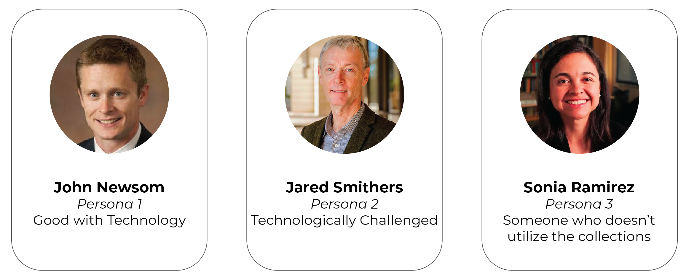
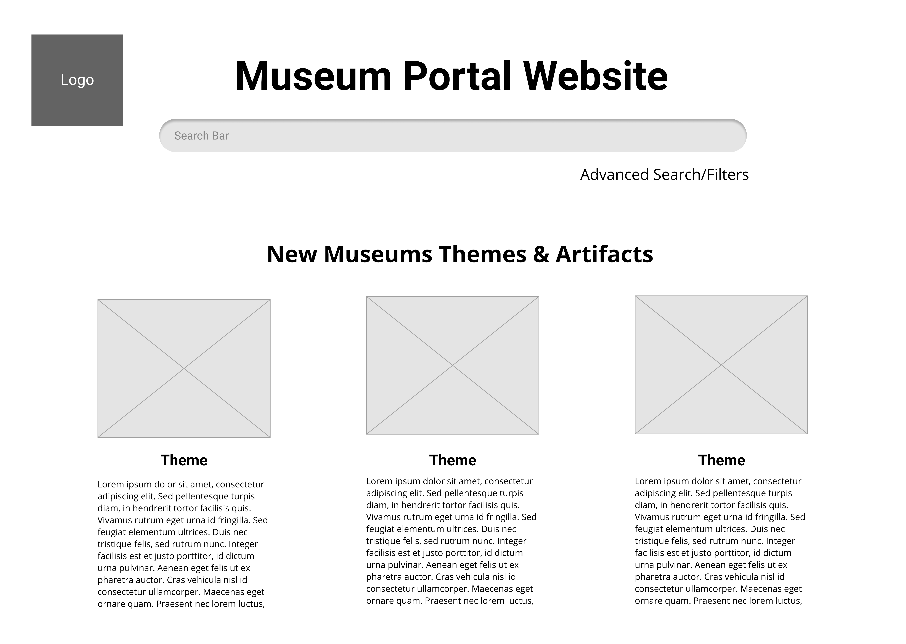
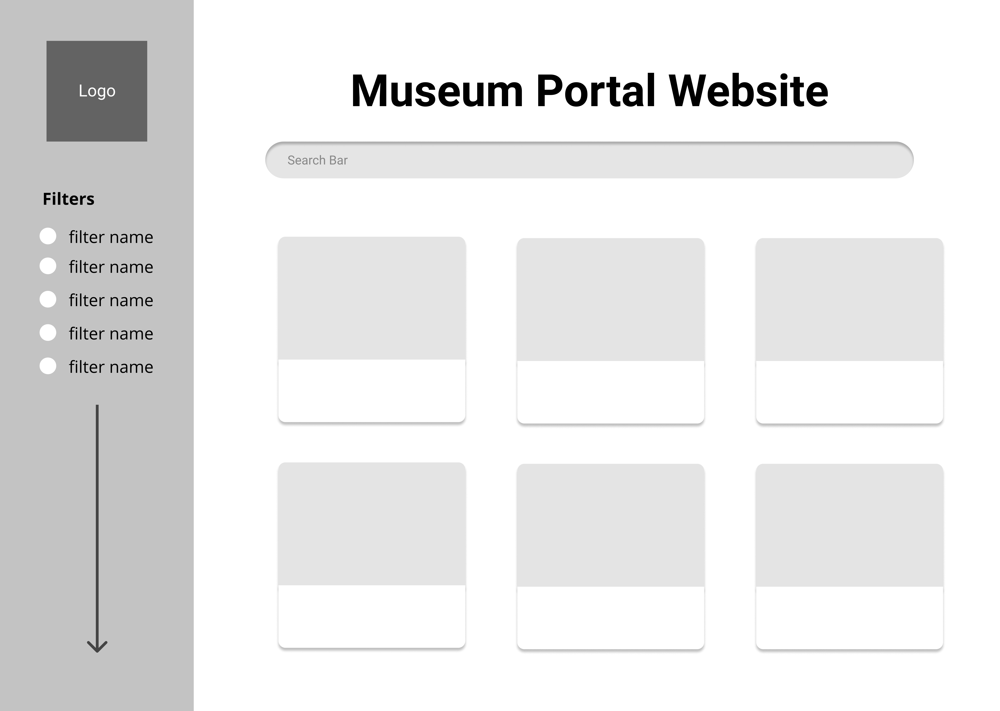
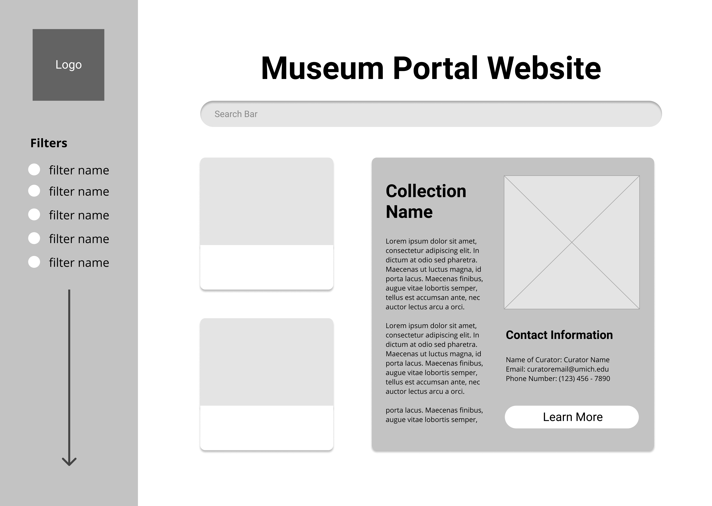

Faculty Museum Portal
a semester long client based ux design project
given background
For this endeavor, 15 museums and special collections on campus are united in their desire to create a portal that enables faculty to discover collections areas at the university that relate to their teaching and research interests.
This proposed portal is intended to provide faculty users with access points to university collections that might lead them in unexpected directions across the collections managed by the individual institutions. The portal would allow users to start their inquiry from a very broad search or from a very specific search, while providing results that range across multiple collection holdings and expose the users to objects they might not have encountered by searching one website, such as the UMMA webpage, due to the fact that they are limited to displaying only a single museum’s holdings and not items from multiple collections, even though they might be directly or thematically related to a lesson plan that a faculty member might be developing.
OBJECTIVE
Our goal was to develop suggestions on how to increase the accessibility of the portal so that its front-end design would increase its capacity for natural discoverability of diverse collection holdings by the faculty user. In addition to this primary focus on these themes, we were also instructed to incorporate how the development of an internal search taxonomy might be developed effectively within this discoverability-centered framework in a way that will still make it understandable and effective for faculty members with varying levels of technological skill.
LANDSCAPE REVIEW
The group’s first task was to conduct a landscape analysis of both UM Museums existing online frameworks and similar outside institutions that might serve as a comparable model for an online portal for interlinked institutions. To do so, we assessed the online portals for 7 outside museums and 6 UM Museum institutions, assessing them based on the criterion points of Accessibility, Ease of Usage, Interdisciplinary, Discoverability, and Functionality. After comparing the strengths and weaknesses of these online systems, we came to the following conclusions that we thought would also need to be applied to the UM faculty portal in order for it to meet the target goals of optimally facilitating discoverability through an accessible frameworks
- 1. accessibility needs to be improved within museum webpages
- 2. stick to easy-to-use computer functions
- 3. focus on interdisciplinary displays and make that concentration easily understandable
- 4. functionality does not operate in the scope of our project
- 5. need to make sure that this portal is designed to make the discoverable items diverse in their nature and not too narrowly focused in their scope
INTERVIEWS
While conducting a landscape review, the team also choose to focus on conducting user interviews to better understand how the current system in place for faculty to utlize the collections operates. This us to numerous interviews of both various museum curators and faculty members
interview process
The first interview protocol asked the managers/curators to describe their collections in more detail, delving into which departmental faculty currently access the collections and how they access them. We also used that interview protocol to learn more about how the collections managers/curators thought we could strengthen the discoverability of their collections using those collections’ current access points.
The second interview protocol asked faculty to discuss their comfort levels with using various forms of technology. It also gave the faculty space to share more about their experiences using non-UM collections portals as well as existing UM collections portals, telling the team what they liked and disliked about searching these various sites. The protocol also included questions concerning potential recommendations professors might have for the development of the UM collections faculty portal.
interview analysis
We decided to use Miro as a collaborative space to enter the data we would use in our interview analysis. We anonymized each interviewee (giving each participant the labels P1, P2, P3, etc.) and then selected a different color post-it for that individual. Parsing through our interview notes from each session, we added one significant data point per post-it, generating a collection of post-its to pull from. From there, we started to group the notes together based on major themes that emerged based on their commonalities. The seven themes we established for the theme board included: background and values, collection information, faculty use, public outreach, functionality, visibility, and images versus text.
After making those groupings, we spent the bulk of our analysis session reviewing each cluster of themed post-it notes to deduce what major insights we could glean from them, adding these takeaways to our insight board in the form of deep blue post-its. During this process we generated twenty-five insights that would be helpful to keep in mind when developing the faculty portal.
PERSONAS
After finalizing our interview analysis, we worked to create three personas to aid us in envisioning how the UM faculty portal might potentially be used. We decided to delineate these three different identities based on their comfort level with technology as well as their experiences working with UM collections (if they had any) — two key components from our interview analysis. In doing this, we wanted to make sure that we took into account several potential user approaches when thinking about the functionality and organization of our wireframes, visual guides representing the skeletal framework of a website, to enhance their overall usability.
professor 1
Our first professor persona we developed is very comfortable with technology and has utilized the UM collections in the past. He wishes that the process was more streamlined, allowing him to gauge what collections can be of use to him in his teaching by searching one website versus having to browse multiple websites.
professor 2
Our second faculty persona enjoys working with UM collections but is very uncomfortable with technology, preferring to reach out to the collections curators/managers who he feels could give much better information about the collections themselves than any website ever could.
professor 3
Our final professor persona is fairly comfortable with technology but has little to no experience navigating or using the UM collections. When she has tried to use the collections before by accessing them online, she gets lost in the process due to its decentralization and decides it’s not worth the hassle.
JOURNEY MAPPING
A journey map, which is a visualization of the process a person goes through in order to accomplish a goal, was also developed for our tech-savvy user with experience using collections. (We made the decision not to create journey maps for the other two personas due to the fact that they would simply be cutting out steps from the process detailed in our tech-savvy user journey map.) It details how this user would decide to use the portal, how he would explore it, how he would compare search results, and how he would ultimately select a collection. Each step also delineates the persona’s emotional process as well, which emphasizes how he enjoys the more streamlined process and an avenue to contact collections curators/managers if wanted.

WIREFRAMES
portal homepage
Several team members wove these elements into several pages of Figma wireframes, which (1) document what a potential user would see when landing at the portal, (2) what happens when said user has typed in a search, and (3) what happens when a user selects a collection that appears in the search results. The homepage of the portal (see image below) includes a large search bar and a link below that gives users the option to conduct an advanced search with filters. Given how our interviewees commented on how the portal could be used for collections outreach and generally increasing discoverability, the homepage would also highlight new museum themes or artifacts with accompanying images and text descriptions that would link out to the websites publicizing those things.
portal search results
The search results page wireframe (see below) depicts how each relevant collection appears with an accompanying photo. (This collection photo would be determined by each museum.) A filter bar would appear on the side of the page, allowing the user to select certain collections over others. The third wireframe depicts an expanded search results page (see below). Once a user clicks on a collection, a window will pop up with a short description of that collection, the photo from the search results, contact information for the curator, and a link that would navigate users to the search results on the collections site for the item/subject/theme queried (if possible).
 FUTURE RECOMMENDATIONS
sustainability
Before creating our wireframes and journey maps, we reached out to members of the UM IT community, including Christopher Billick, web developer of the portal’s eventual host, the Arts & Culture website, and Maricela Avalos, a Data/GIS scientist responsible for centralizing open access data for MBGNA. These were very helpful meetings, as they gave us a perspective on the technological framework that the portal would need to operate within, ideas for visualizations that would be most effective for the design and implementation team at Arts & Culture, and outreach strategies for increasing faculty involvement.
features
saved lists
In terms of some desired features that could potentially be incorporated into the portal down the line, several interviewees expressed interest in the ability to save their searches to personal lists as a time-saver. Based on our talk with Christopher, this is something that could realistically be implemented design-wise considering the platform’s current functionality.
chat feature
Another suggestion that came up during our interviews was the possible inclusion of a chat feature like the one featured on the UM Library website, which would allow faculty to communicate with collections curators/managers that way instead of via email. A modification of this idea would be a way to allow a user to enter their contact email so that a museum staff employee can get back to them about they could potentially help with the user’s search query.
engagment
Finally, our contacts and interviewees stressed to us that in order for the portal to be successful in the long-term, there needs to be a strong, concentrated effort from the start to engage faculty as users and encourage them to adopt it into their daily lives, including through potential activities such as workshops with volunteers to become more familiar with the tools, presentations around campus, public talks where the portal can be introduced, and academic publications about the portal and its usefulness to faculty at UM.
questions
Some important questions to think about for work in the future: How can the UM collections publicize the portal and demonstrate its usefulness to the faculty? Are there effective methods of communication already in place to make the portal known? What new modes of communication could be utilized (perhaps including some of the suggestions made above)? These questions might potentially be answered via a survey distributed to the faculty or via additional faculty interviews.
OUTCOME
As a team we created a final report for the representative for our clients which includes all of the information listed above as well as links to the all of the individual parts. A shorter slide deck version of the report was also generated to utlize when to preesenting the deliverable for the semester